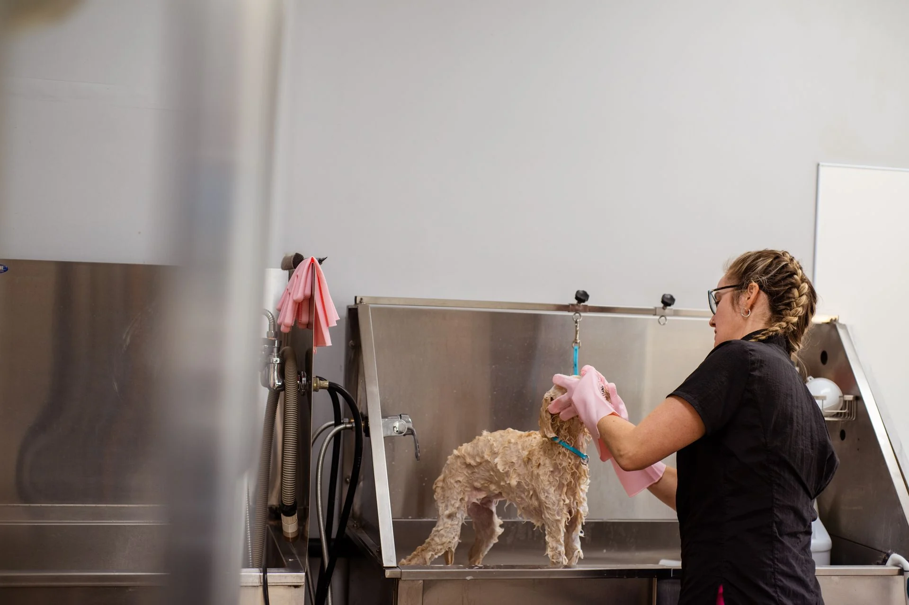
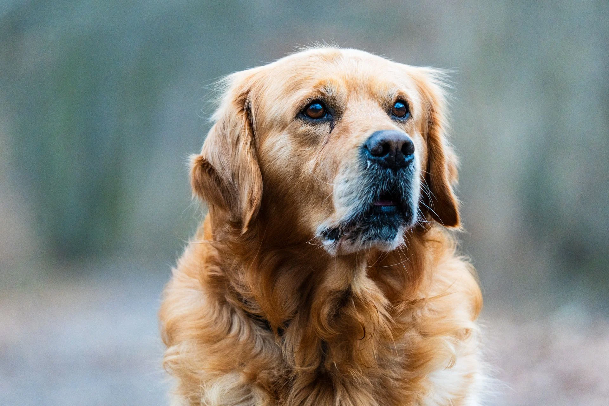
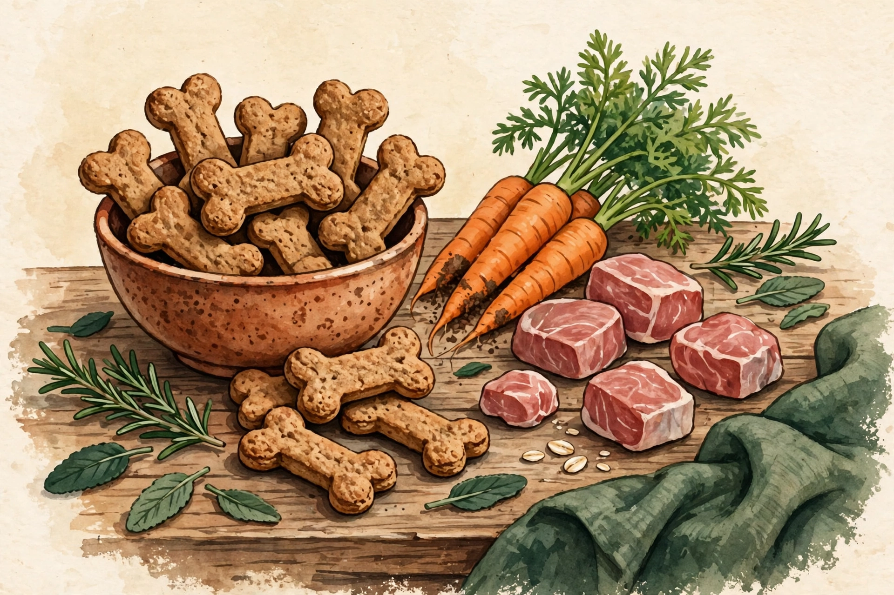
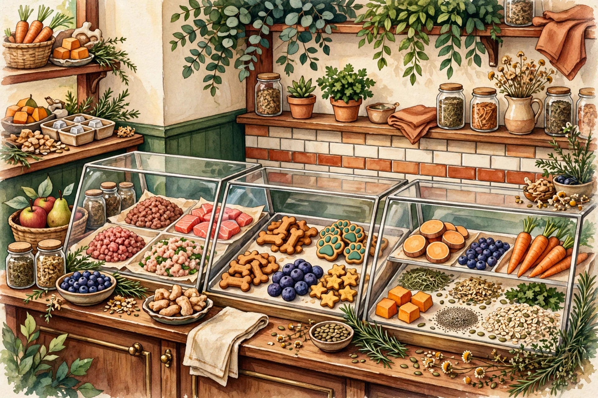

Grooming Salon
The Grooming Salon
Bendigo's top-rated groomers: baths, full grooms, nail care and puppy first trims, all handled gently by our experienced grooming team.
See grooming servicesK9 Deli is Bendigo's own three-in-one pet destination: a professional grooming salon, a well-stocked pet supplies shop, and a fresh pet meat deli — all under one roof on Hopetoun Street.

Grooming, supplies and fresh food — everything your pet needs, from the same friendly local team.

Bendigo's top-rated groomers: baths, full grooms, nail care and puppy first trims, all handled gently by our experienced grooming team.
See grooming services
Quality food, toys, beds, leads and everyday essentials — hand-picked ranges for dogs, cats and small animals.
See what's in store
Fresh pet meat, bones and natural treats cut daily — dinner-time goodness that keeps tails wagging and bowls licked clean.
See the deli rangeA snapshot of what our team does every day — see the full picture on the services page.
Wash, cut, style and finishing touches tailored to your dog's breed, coat and comfort.
A proper warm wash with quality shampoo, finished with a fluffy blow-dry.
Quick, gentle nail trims and finishing care for pets of all sizes.
Quality fresh meat and bones from the deli counter, cut for pets of every size.
Natural treats, chews and training rewards to spoil your best mate.
Food, toys and essentials — plus honest advice from people who know pets.
K9 Deli has been part of the Bendigo community since 1996 — nearly three decades of baths, trims, treats and tail wags. What started as a neighbourhood pet shop grew into something special: a grooming salon, a supplies store and a fresh pet meat deli, all in one friendly spot on Hopetoun Street.
Our team of groomers is trusted by pet owners right across Bendigo — we're proud to be rated the city's number one grooming salon. Generations of local dogs and cats have passed through our doors, and many of them keep coming back.
Fresh cuts, fresh food and happy customers — a little taste of life at K9 Deli.
Drop in for a groom, stock up at the deli, or just bring the dog in for a pat. We'd love to meet you.